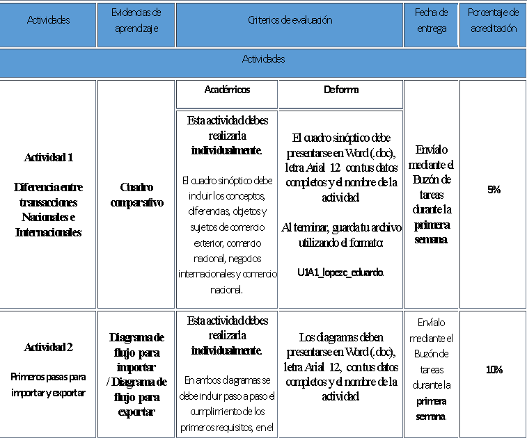

Introducción al seminario
Bienvenido al seminario de titulación Economía Conductual para la Toma de Decisiones en las Unidades Económicas, que te colocará en el contexto de la teoría económica y las ciencias del comportamiento como un marco conceptual y práctico para tomar decisiones más acertadas en las unidades económicas, lo cual favorece las mejoras, los cambios y la solución de problemas que afectan su productividad. Para lograr lo anterior, propondrás escenarios de decisión a partir de los planteamientos teórico-metodológicos de las ciencias del comportamiento.
Encontrarás contenidos vinculados a las diferentes teorías del valor, esquemas específicos denominados Modelo EAST y Modelo CREATE relacionados con el comportamiento para favorecer el diseño de entornos de decisión en las unidades económicas.
La economía conductual tiene como base una metodología experimental, por lo que la observación y la obtención de datos en el contexto laboral serán sustantivas para el desarrollo de tu aprendizaje. Tus hallazgos te permitirán diseñar entornos de decisión a partir de la metodología Behavioral Design para mejoras, cambios o solución de problemas detectados en las unidades económicas.
El propósito de este seminario es que diseñes entornos de decisión con base en los fundamentos teórico-metodológicos de la economía conductual para modelar escenarios que favorezcan soluciones a problemas en las unidades económicas.
Las unidades temáticas que abarca este seminario son las siguientes:
- Teorías del valor y toma de decisiones
- Modelo EAST y Modelo CREATE
- Diseño de entornos de decisión: heurísticos, sesgos cognitivos y NUDGES
- Entornos de decisión en la economía del comportamiento
- Diseño de entornos de decisión bajo el enfoque Behavioral Design
Las competencias específicas que desarrollarás se enlistan a continuación:
- Contrastar las diferentes teorías del valor a través de un análisis histórico a fin de identificar su aplicación en la toma de decisiones.
- Reconocer las características y principios de los modelos que representan la economía del comportamiento por medio de la identificación de las relaciones entre ambos modelos para señalar los principios psicológicos que se vinculan a la toma de decisiones de las unidades económicas.
- Analizar la metodología del modelo CREATE en las unidades económicas mediante el diseño de entornos de decisión a fin de incentivar cambios conductuales que favorezcan una mejor toma de decisiones de las unidades económicas.
- Experimentar con heurísticos y NUDGES por medio de pruebas de campo que permitan observar entornos de decisión y la operación de heurísticos bajo el Sistema de Pensamiento Automático y el Sistema de Pensamiento Reflexivo, a fin de comparar los procesos de decisión en las unidades económicas.
- Diseñar entornos de decisión con base en las propuestas teóricas de la economía conductual a partir del diagnóstico de una problemática específica en las unidades económicas para optimizar el aprovechamiento de sus recursos organizacionales.
Forma de evaluación
- Se llevará a cabo una evaluación diagnóstica como punto de partida que permita identificar el nivel de los conocimientos previos del estudiante.
- La evaluación formativa se desarrollará durante el curso e incluirá la entrega de las evidencias de aprendizaje (matriz comparativa, mapas mentales, videos, infografías, esquemas, sociodramas, reportes, cuadros sinópticos, presentaciones multimedia, historietas, crucigramas y foros de discusión en la plataforma) aplicadas en cada unidad temática, las cuales conformarán el portafolio de evidencias.
- La evaluación sumativa consistirá en la elaboración de una tesina con una propuesta de diseño para favorecer el cambio hacia el comportamiento deseado, mediante la metodología Behavioral Design a fin de brindar una solución o mejora de un servicio, de un bien económico o una necesidad específica en las organizaciones productivas.
